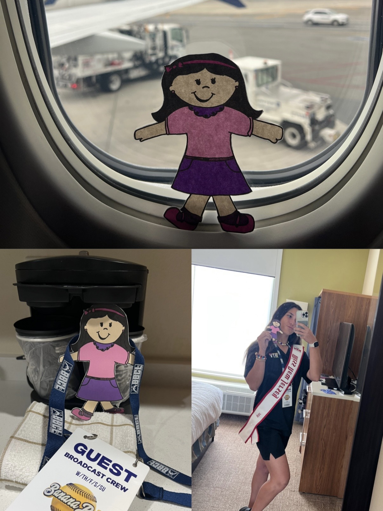
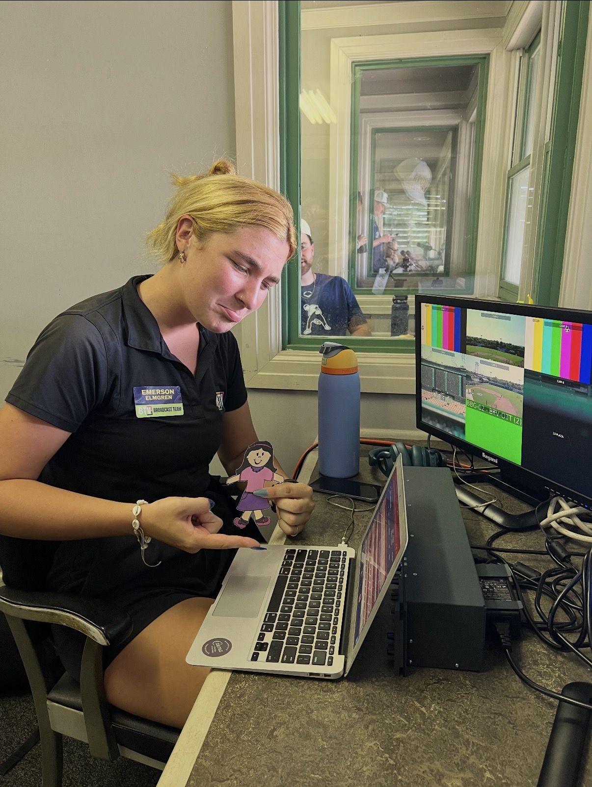
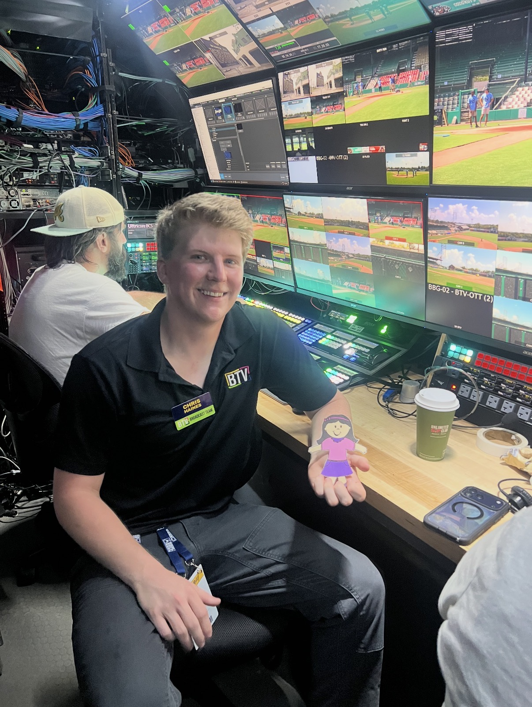
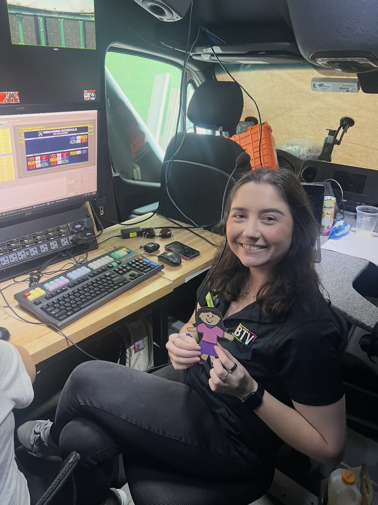
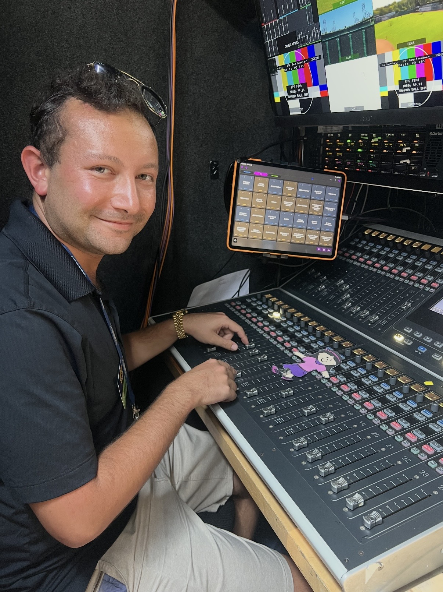
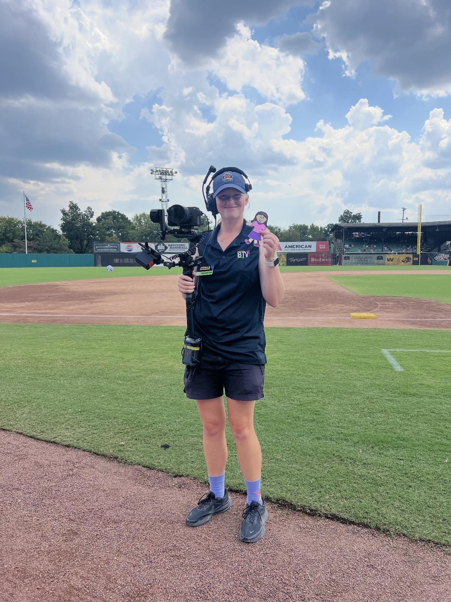
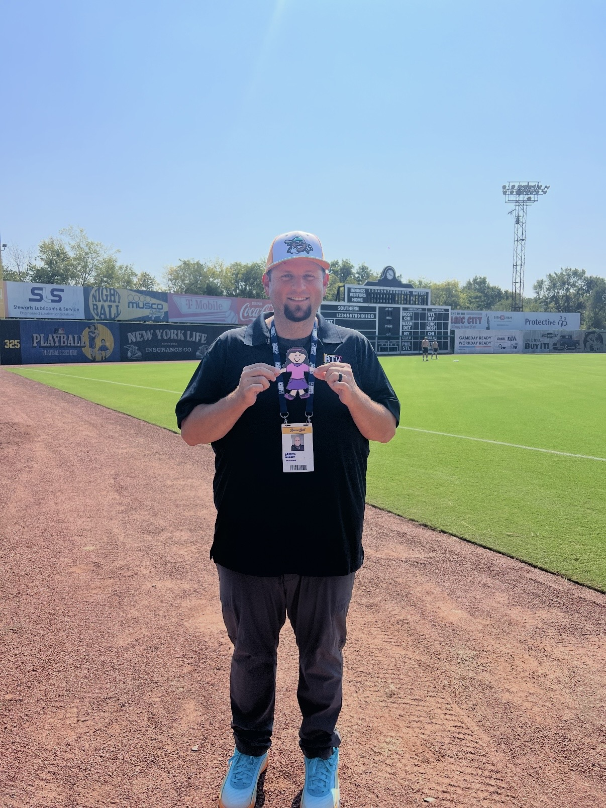
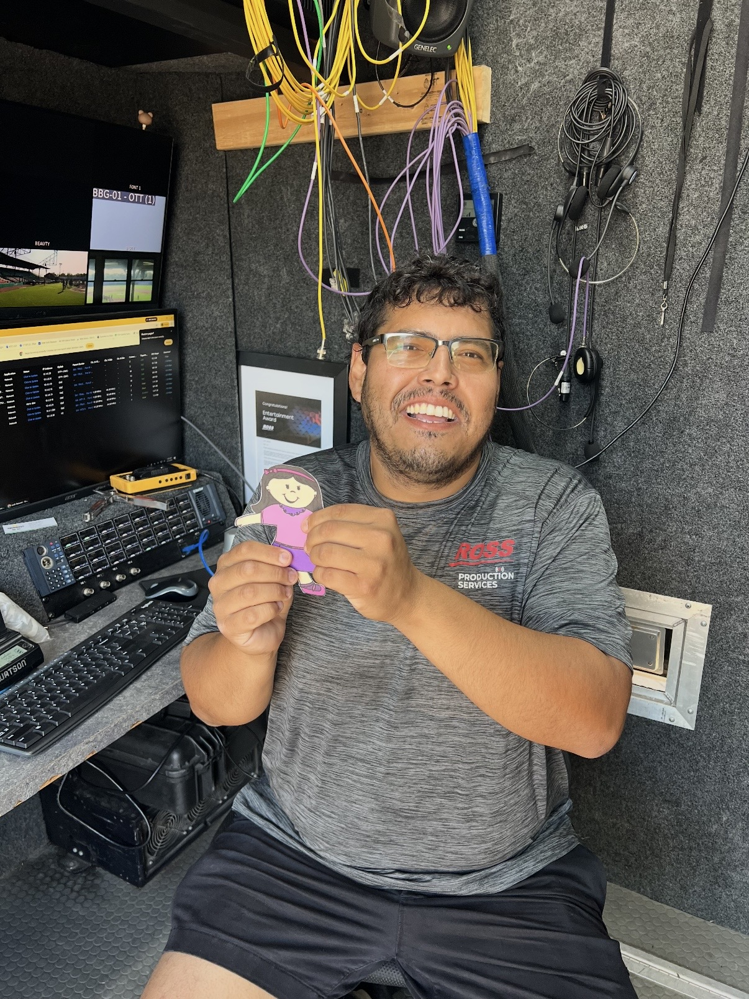
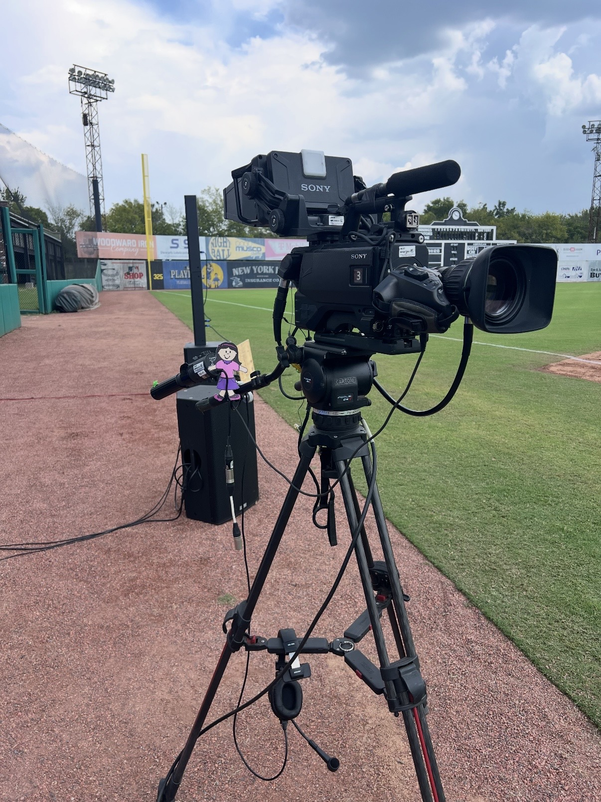
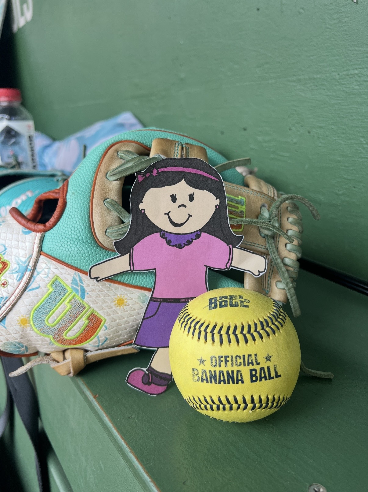

Stacy is officially off and on her way to Rickwood Field in Birmingham, Alabama, to help broadcast the Banana Ball Coconuts vs. Clowns game! She's picked up her credential, and we're all set and ready to leave the hotel. We're excited to get to the ballpark, see what the broadcast team has to offer, and bring the energy of this special game to viewers!Stacy is officially off and on her way to Rickwood Field in Birmingham, Alabama, to help broadcast the Banana Ball Coconuts vs. Clowns game! She's picked up her credential, and we're all set and ready to leave the hotel. We're excited to get to the ballpark, see what the broadcast team has to offer, and bring the energy of this special game to viewers!

Today, we're producing a game at Rickwood Field, the oldest ballpark in America! We're honored to be part of this special broadcast and help bring the game to viewers. Stacy is working with our producer, Emerson, to finalize the script, ensuring our information and stories are ready for the show. Producing requires organization, creativity, and teamwork to bring everything together for a successful broadcast

Here in the broadcast control room, Chris directs camera operators, replay, and graphics to make sure everything comes together smoothly during a live production. Stacy helped him call camera shots, coordinate replays, and communicate with the graphics team. This role requires strong communication, quick decision-making, and teamwork to keep the broadcast running smoothly.

Here in broadcast, Emma operates XPression to build and input data for in-game graphics that appear live on the broadcast. Stacy helped her prepare graphics, enter game information, and make sure everything was accurate before going on air. This job combines technology, attention to detail, and quick thinking to keep viewers informed throughout the game.

Here in broadcast, Jared works as the A1, managing all the audio for the live production. He makes sure commentators, microphones, and other audio sources sound clear for viewers. Stacy helped Jared learn how to manage audio levels, monitor sound, and ensure everything sounds great on air. This role requires technical knowledge, attention to detail, and quick problem-solving to keep the broadcast sounding its best.

Today, Stacy is helping Jess operate the broadcast gimbal, a camera system used for on-field hits and interviews during the live broadcast. Together, they capture engaging shots and bring viewers closer to the action. Working as a camera operator requires teamwork, creativity, and technical skills to capture great footage!

Here in broadcast, James is responsible for managing all the technical aspects of our productions. He makes sure everything gets on the air and stays on the air, from checking equipment to troubleshooting technical issues. Stacy helped him monitor equipment, check technical setups, and learn how we keep a broadcast running smoothly. Every day brings new challenges that require problem-solving, teamwork, and technical skills.

Here in broadcast, Stacy and Adrian put in the work! From wrangling cables and setting up equipment to helping bring productions to life, every day is a hands-on experience. They worked together to keep things running smoothly, solve problems, and make people smile.

Look at Stacy go! She's taking charge of the low third camera all by herself and capturing the action like a pro!

Wow! Stacy even caught a foul ball! In Banana Ball, a fan catching a foul ball counts as an out, making this an exciting moment for everyone in the ballpark!
❮
❯